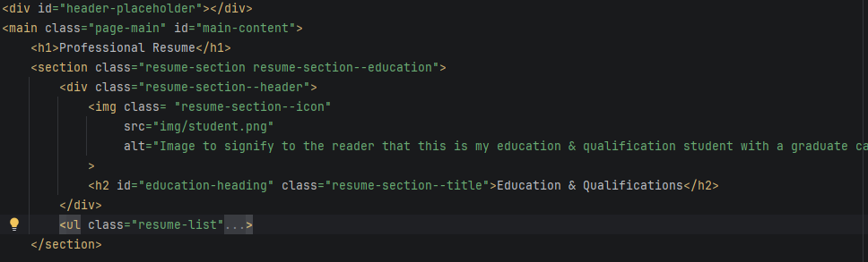
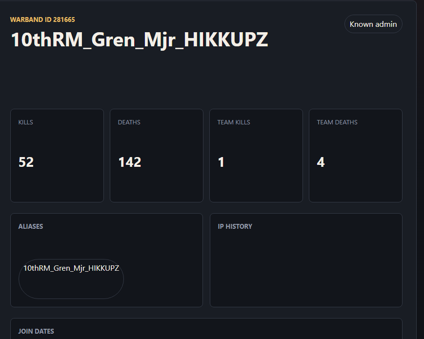

Web Development Skills
I have a strong fundamental knowledge of how Website Design works from Static to Dynamic webpages, I am able quickly adapt to the required task.
Static HTML Portfolio
This website was build using GitHub Pages which allows you to host static websites which is perfect for my use case here.

To see the source code have a look at my GitHub
To see a breakdown of the card system on the homepage please see Card breakdown
Using Next.JS
A modern approach to web development is using something like Next.js, so I have been building a game management panel for a game called Mount and Blade Warband.

This website uses two Node.js instances one for the front end and the other for the backend handles loading the server log files into a PostGreSQL database.